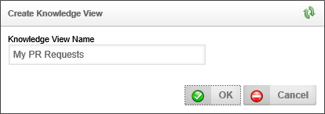
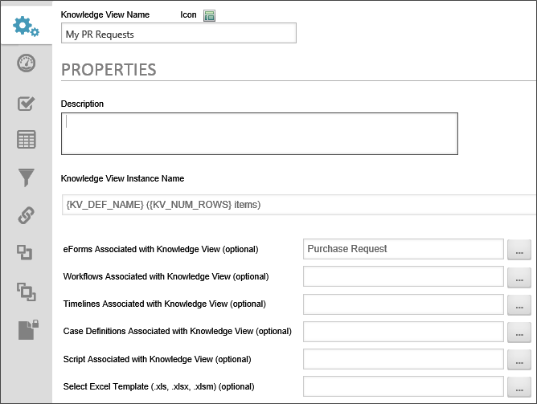
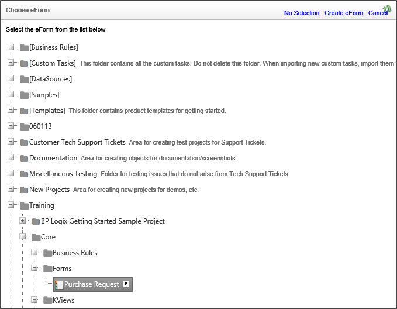
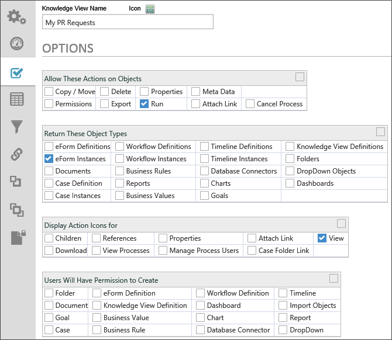
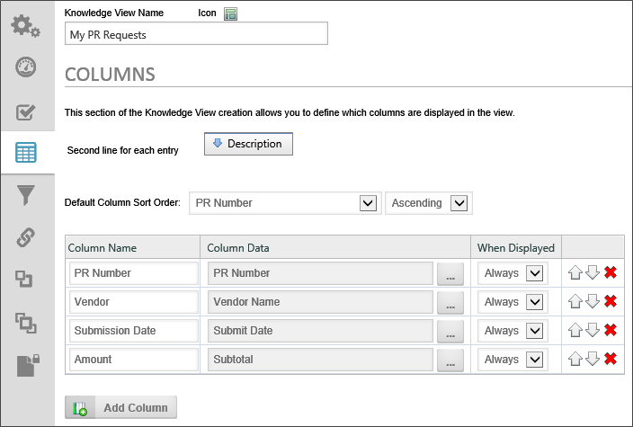
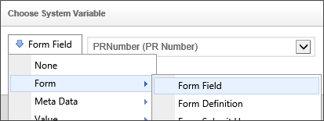
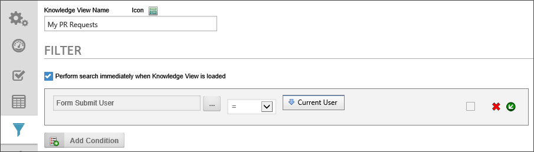

|
|
Lesson Contents | In this Lesson, you will learn how to recreate the Knowledge Views in the training sample project. |
In the Training folder, create a new folder named "KViews". Once you have created this folder, navigate to it, and, once inside the KViews folder, select “Knowledge View” from the Create New… dropdown that is located on the upper right of the Process Director screen. The Create Knowledge View screen will open.

In the Knowledge View Name box, type "My PR Requests", then click the OK button to create the Knowledge View, and open the Knowledge View definition screen.
We are going to create a Knowledge View that will display some form fields from the PR requests, and only display instances of the Form that you have personally submitted.

In the Properties tab, we need set the Form that we want to associate with this Knowledge View to the Purchase Request Form we created earlier. Click on the Build button for the Forms Associated with Knowledge ViewObject Picker control to open the Choose Form dialog box.

Navigate through the treeview to find the Purchase Request Form and click on it to select the Form and close the dialog box. The selected Form's name will appear in the text box of the Forms Associated with Knowledge ViewObject Picker control. When you are finished, click the Update menu item to save the change you just made.

In the Options tab, we want to restrict both what types of object will be displayed in the Knowledge View, and what we will be allowed to do with the displayed objects. All we want to see are the Form instances of the Purchase Request, and the only action we want to take is to open the Form. To accomplish this, we are going to uncheck most of the check boxes in this tab, and ensure that the only check boxes that are checked are those illustrated in the figure above. When you are finished, click the Update menu item to save the changes you just made.

Process Director adds a number of default columns to a Knowledge View when it is created. In the case of the current Knowledge View, we don't want to use any of the default columns. So they will need to be edited. In fact, there are five default columns, but we are only going to use four columns in this Knowledge View. Each of the four columns will display a Form field from the Purchase Request Form.
So, let's begin by deleting one of the default columns by clicking on the delete icon () on the right side of one of the default columns. There should be four remaining default columns listed.
Change the Column Name of the first column to "PR Number". In the Columns Data field, click on the Build button to open the Choose System Variable dialog box. In the Choose System Variable dialog box, select "Form Field" from the dropdown menu.

Once you select the Form Field system variable, a dropdown control will appear that lists all of the form fields in the Purchase Request Form. Select the PR Number field from the dropdown, then click the OK button to close the dialog box.
You can repeat this process for the remaining three fields, which should be configured to display the columns shown below.
| Column Name | Form Field |
|---|---|
| PR Number | PR Number |
| Vendor | Vendor Name |
| Submission Date | Submit Date |
| Amount | Subtotal |

The Filter tab is where you determine which records will be displayed in the Knowledge View. In the case of the current Knowledge View, we want to display only those purchase requests that were submitted by the current user.
Click the Add Condition button to create a filter condition for the Knowledge View. For this filter condition, click on the Object Picker to open the Choose System Variable dialog box, from which you should select the Form Submit User.
Click the OK button to save your selection and return to the Filter tab. Ensure that the operator is set to "=", and the comparison value is set to "Current User".
When you are done, click the OK button to save the Knowledge View.